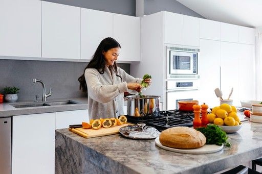

Nutricionista em São José dos Campos: conquiste o equilíbrio hormonal e o emagrecimento consciente
Sua saúde integral em primeiro lugar. Um acompanhamento nutricional personalizado e construído junto com você, com tecnologia de Ultrassom BodyMetrix e 60 dias de suporte direto no aplicativo.
Acompanhamento desenhado para o seu estilo de vida
Sem dietas restritivas ou metas inalcançáveis. Um método fundamentado na ciência da saúde feminina.
Saúde Integral e Equilíbrio Hormonal
Abordagem completa cobrindo corpo, mente e saúde intestinal para promover qualidade de vida, bem-estar e emagrecimento duradouro.
Acompanhamento Prático pelo Celular
Acesso rápido ao seu plano alimentar e suporte continuado direto na palma da mão para tirar dúvidas sempre que precisar.
Elaboração Participativa da Dieta
O cardápio é montado em conjunto durante a consulta, respeitando sua rotina e preferências para garantir uma adesão leve e sem restrições desnecessárias.
Como ajudamos você a alcançar seus objetivos
Estrutura completa de atendimento presencial em São José dos Campos ou no formato online.
Consulta Nutricional (Online & Presencial)
Avaliação detalhada analisando rotina, estilo de vida, exames laboratoriais e deficiências nutricionais e metabólicas. Permite estruturar um plano personalizado focado no equilíbrio hormonal, perda de gordura e controle de doenças autoimunes.
Agendar ConsultaAvaliação Corporal com Ultrassom BodyMetrix
Avaliação precisa da composição corporal (gordura e massa muscular) realizada durante a consulta presencial em SJC. Garante uma análise do progresso imune a alterações causadas por ciclo menstrual, hidratação, álcool ou exercícios.
Saiba Mais Sobre o UltrassomPlano Alimentar Personalizado no Aplicativo
Elaboração de cardápio sob medida adaptado às suas preferências e rotina diária, acessível diretamente no celular para proporcionar facilidade e praticidade no seu dia a dia.
Conhecer o Aplicativo
Suporte Exclusivo Pós-Consulta (60 Dias)
Acompanhamento e suporte direto com a nutricionista via aplicativo pelo período de 60 dias pós-consulta para esclarecer dúvidas, orientar prescrições de suplementos, indicar exames e ajustar a dieta.
Entender o SuportePor que nosso método entrega resultados reais?
Diferenciais comprovados para garantir segurança, precisão e adesão no seu acompanhamento.
Tecnologia Ultrassom BodyMetrix
Apresenta 99,4% de precisão na avaliação de gordura e massa muscular. Diferente da bioimpedância tradicional, o ultrassom não sofre variações causadas por hidratação, consumo de álcool, rotina de treinos ou fases do ciclo menstrual.
Suporte Continuado de 60 Dias
Proporciona um canal direto com a nutricionista pelo aplicativo durante 60 dias após a consulta para ajustes no plano alimentar, esclarecimento de dúvidas, análise de exames e orientações de suplementação.
Por que a tecnologia de Ultrassom BodyMetrix revoluciona o seu acompanhamento?
Muitas mulheres enfrentam frustrações na balança e nos exames comuns de bioimpedância devido a oscilações normais do ciclo menstrual, retenção hídrica ou exercícios. O Ultrassom BodyMetrix mapeia diretamente o tecido muscular e adiposo com 99,4% de precisão, permitindo uma leitura fiel e científica da sua evolução corporal sem distorções temporárias.
Agendar Avaliação CorporalSimulador de Triagem Nutricional
Veja como identificamos o foco principal da sua consulta antes mesmo do seu atendimento:
Selecione seu objetivo principal no agendamento via WhatsApp para um direcionamento personalizado.
Conheça a Dra. Natália Gimenes
Dedicação, escuta atenta e rigor científico a serviço da sua transformação.
Natália Gimenes
Dra. Natália Gimenes é nutricionista atuante em São José dos Campos (SJC), especializada em nutrição feminina, emagrecimento consciente e saúde integral. Realiza atendimentos presenciais e online com foco na elaboração participativa de dietas personalizadas e acompanhamento próximo.
Nutrição fundamentada em ciência, escuta atenta e resultado real
A Dra. Natália Gimenes realiza atendimentos nutricionais com foco em nutrição feminina, emagrecimento consciente e saúde integral na cidade de São José dos Campos e em formato online. A consulta é pautada por um atendimento sem pressa, em que os exames e a rotina da paciente são analisados minuciosamente para criar um plano feito sob medida, garantindo flexibilidade e resultados duradouros.
Atendimento humanizado para quem busca equilíbrio de forma prática e sustentável.
O que dizem as nossas pacientes
Avaliação média auditada de 5.0 estrelas no Google com 362 depoimentos espontâneos.
"Entrei em contato para marcar uma consulta com a Dra Natália. A Fer foi super solicita, tirando minhas dúvidas e sempre mto cordial. Dra Natália, muito educada, me atendeu com atenção e sem pressa, o diferencial é a forma como ela elabora um cardápio simples e fácil de acordo com o que eu gosto e junto comigo. Indico a todos, estou muito satisfeita."
"Minha experiência está sendo excelente! A dieta é correspondente a tudo que eu como, então é prazeroso o processo! É muito responsável.. inicia gradualmente, solicita exa"
Como funciona o seu acompanhamento
Um caminho simples e estruturado do primeiro contato ao acompanhamento diário.
Agendamento Prático
Solicite seu atendimento pelo WhatsApp escolhendo entre a modalidade presencial em São José dos Campos ou consulta online.
Consulta e Avaliação
Em um atendimento detalhado e sem pressa, avaliamos seu estilo de vida, exames laboratoriais e, no presencial, realizamos o Ultrassom BodyMetrix.
Elaboração Conjunta do Plano
Seu cardápio é montado junto com você durante a consulta, alinhando suas metas nutricionais ao que você realmente gosta de comer.
Acompanhamento por 60 Dias
Acesse seu plano no aplicativo e conte com suporte direto por 60 dias para sanar dúvidas, adequar suplementação e ajustar sua rotina.
Tire suas dúvidas antes de agendar
Transparência total para você tomar a melhor decisão sobre a sua saúde.
Pronta para vivenciar uma nutrição consciente e personalizada?
Agende sua consulta com a Dra. Natália Gimenes em São José dos Campos ou de forma online e conquiste seus objetivos com suporte completo.
Agendar Consulta via WhatsApp